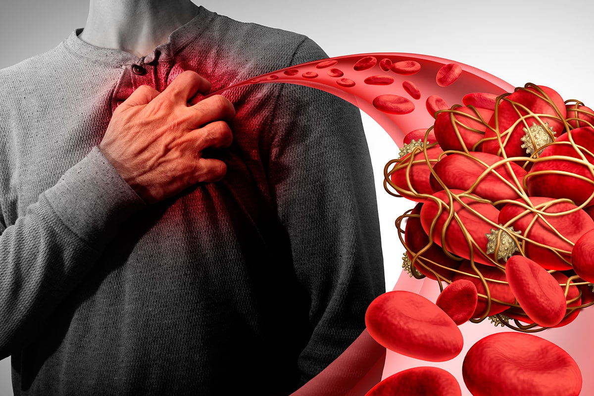
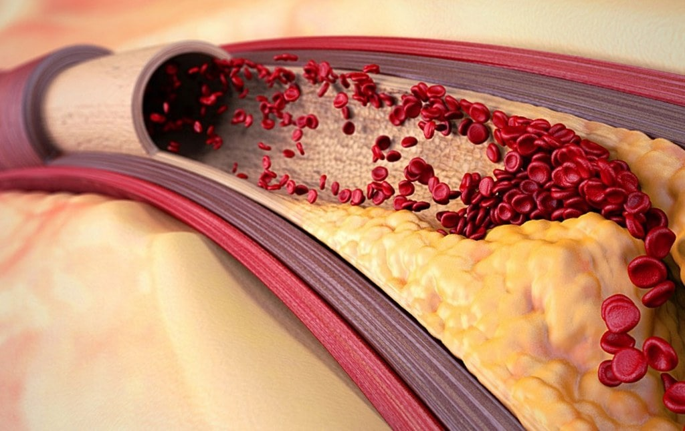

OBSERVATORIO DE HIPERTENSIÓN ARTERIAL
Página de negocios

Me gusta

Contactarnos


A 18.889 personas les gusta esto

OBSERVATORIO DE HIPERTENSIÓN ARTERIAL
28 millones de españoles no sospechan desde hace años de qué están enfermos. El producto que esconden los médicos
La enfermedad cardiovascular es la principal causa de muerte en todo el mundo. Según la OMS, 18 millones de personas mueren a causa de ella cada año, un tercio de ellas prematuramente y antes de la vejez.
Lo peligroso es que la enfermedad puede afectar a cualquiera, incluso a una persona joven y sana, y ser asintomática. Desafortunadamente, es imposible predecir quién y cuándo será alcanzado por este triste destino, hacia el cual se puede ir sin saber durante años.
El dolor de cabeza, las palpitaciones del corazón, los puntos negros en los ojos, la fatiga crónica, la apatía y las fluctuaciones de presión son signos de una enfermedad cardíaca como la hipertensión. A menudo, la hipertensión acompaña a otras enfermedades y causa complicaciones graves del sistema cardiovascular.
Un médico del Instituto de Investigaciones, que estudia las enfermedades cardiovasculares en España, comentó sobre la situación de las enfermedades del corazón en el país y dio recomendaciones simples sobre cómo deshacerse de la enfermedad de manera fácil y segura.
Para esto no necesita gastar mucho tiempo y dinero. Existe un producto confiable recomendado por médicos experimentados. Y cuanto antes actúes, mejor será para ti.
Nuestra redacción llamó a la presentadora de televisión Sofia Bernara, y ella nos habló del producto para la hipertensión que salvó la vida de su padre.
Presentadora de televisión Sofia Bernara
"Mi padre tiene 67 años, es hipertenso. En la última visita a la ambulancia, los médicos le aconsejaron llevar un diario de presión arterial. Los indicadores de ese día simplemente se salieron de la escala: 227/115, 226/114, y así sucesivamente durante varios días seguidos.
¡A veces también sucedió que el tonómetro simplemente no pudo hacer su presión y dio un error! Hasta me da miedo adivinar qué presión tenía en ese momento...
Lo peor es que mi padre no siente nada, incluso cuando su presión es de 230 y más. Cuando tengo que ir a trabajar, tengo miedo de que le pase algo a mi papá y yo no pueda estar allí para ayudar.
Escuché en la grabación del programa que cada 7 español mueren de enfermedades del corazón, y 5 de ellos son completamente inesperados cuando los indicadores de presión eran normales durante mucho tiempo o la enfermedad cardíaca no se diagnosticó en absoluto.
Los médicos nos dijeron que la hipertensión no se cura, cada seis meses nos hacemos exámenes e inyecciones. Luego, nuevamente presión fuera de escala durante días y días. Ajustaron la nutrición, agregaron actividad física ligera, pero no hubo resultado.
Un cardiólogo familiar habló sobre el nuevo producto , que está ganando popularidad, e inmediatamente lo pedí.
No había ninguna esperanza en absoluto. ayuda a mejorar el funcionamiento del sistema cardiovascular en más de un 70%.
Y, sorprendentemente, papá se sintió mejor, la presión comenzó a recuperarse lentamente, los
ataques ocurrían con menos frecuencia. Ahora, gracias a Dios, no los tiene durante mucho
tiempo. Él lo ha tomado durante casi 6 semanas hasta ahora. ¡¡ es nuestra salvación!!
Qué suerte tengo de haberlo encontrado. ¡Pruébenlo y les sorprenderá el resultado! Finalmente podrán
respirar profundamente con la alegría de haber encontrado un producto que les ayuda".
Decidimos hablar con un cardiólogo del Instituto de Salud de España, nos habló más sobre la hipertensión y evaluó la efectividad de las gotas de . Esto es lo que aprendimos:
Síntomas de la hipertensión
La hipertensión es una enfermedad del sistema cardiovascular, que es causada por un aumento estable de la presión arterial.
Acompaña a muchas enfermedades y, a menudo, causa complicaciones peligrosas en el sistema cardiovascular: accidente cerebrovascular, infarto de miocardio, crisis hipertensiva y muchas otras.
Un corte del cerebro de una persona que murió de un derrame cerebral
Hay tales síntomas de hipertensión:
- dolor de cabeza;
- latido del corazón acelerado;
- puntos negros o manchas delante de los ojos, visión borrosa;
- ruido en los oídos;
- fatiga cronica;
- apatía, nerviosismo, somnolencia;
¿Por qué es tan peligrosa esta enfermedad?
A menudo no tiene síntomas. En el 90% de los pacientes hipertensos, un aumento de la presión no provoca un cambio en el bienestar.
Si ignora esta enfermedad, inevitablemente conducirá a enfermedades graves que representan una amenaza real para su vida.
Causa muchas complicaciones peligrosas y, a menudo, se acompaña de otras enfermedades (accidente cerebrovascular, infarto de miocardio, accidente cerebrovascular, ruptura aórtica, insuficiencia renal y otras). Si nota algún síntoma en usted mismo, esto sugiere que la hipertensión ya ha causado una complicación. Por lo tanto, es necesario tomar medidas inmediatas y deshacerse de la hipertensión.
Puede presentarse en personas sanas y jóvenes.
No se trata completamente, por lo que debe elegir un producto que pueda usarse durante mucho tiempo y no dañe su salud.
Otros productos no se pueden prescribir debido a las contraindicaciones y porque causan efectos secundarios.
La muerte súbita ocurre en el 17% de los casos.
Opinión experta
"Desafortunadamente, en la gran mayoría de los casos, la hipertensión arterial no se puede curar y se requiere una terapia a largo plazo durante toda la vida.
Es muy importante en la etapa de diagnóstico prescribir el tratamiento correcto. Si el tratamiento se interrumpe bruscamente, se producirá un rápido aumento de la presión arterial.
El principal problema en el tratamiento de enfermedades cardiovasculares es que, en la mayoría de los casos, a los pacientes se les receta un régimen estándar de medicamentos que causan efectos secundarios o que no se pueden recetar debido a contraindicaciones.
Por lo tanto, en 2020 comenzamos a desarrollar el producto para la hipertensión . Para ello, hemos recopilado los componentes más efectivos y probado el desarrollo resultante en nuestros pacientes."
ayuda a normalizar la presión arterial durante mucho tiempo y previene el desarrollo de otras enfermedades cardiovasculares, no causa efectos secundarios y es adecuado para el 99% de nuestros clientes.
Quién está en alto riesgo de enfermedad
Existen tales factores de riesgo:
- otras enfermedades del corazón y vasos sanguíneos;
- sobrepeso, obesidad, diabetes;
- ingesta excesiva de sal, mala alimentación;
- baja movilidad;
- cambio de clima, tormentas magnéticas;
Sensacional descubrimiento de científicos del Instituto de Salud de España
Según la investigación médica, la tasa de desarrollo de patologías y complicaciones cardiovasculares ha ido creciendo rápidamente en los últimos años.
Si no toma medidas urgentes o utiliza un tratamiento ineficaz, inevitablemente se iniciarán poderosos procesos patológicos en su cuerpo, lo que conducirá a un mayor riesgo de consecuencias graves.
El problema es que la presión arterial solo aumentará con el tiempo, lo que contribuirá a la destrucción de los vasos sanguíneos y los órganos internos.
Un equipo de científicos del Instituto de Investigaciones de España desarrolla desde 2020 la formula del producto innovador para enfermedades cardiovasculares.
Al crear , los científicos seleccionaron cuidadosamente los componentes y sus proporciones. La eficacia del producto está clínicamente probada. También realizaron un estudio con más de 200 voluntarios. Unos de ellos bebieron un placebo, otros, . El resultado sorprendió gratamente a los científicos.
Después de una semana de aplicar las gotas, sus vasos sanguíneos comenzarán a recuperarse.
Por desgracia, una transición brusca a una nutrición saludable y ejercicio no puede garantizarle que esté a salvo y que el problema haya desaparecido. Además, los cambios repentinos pueden hacer daño, porque su cuerpo estará bajo estrés.
En las condiciones de la vida moderna, no será tan fácil cambiar sus hábitos y renunciar a sus comidas y bebidas favoritas. Será más efectivo usar : ayudará a fortalecer las paredes de los vasos sanguíneos y normalizar la presión.
La hipertensión es cada vez más frecuente en jóvenes y puede ser asintomática al principio. ¡Hemos creado especialmente para que se sienta sanos y felices!
Composición de
En la creación de gotas, solo se utilizaron ingredientes naturales y probados. es un complejo 100% natural de extractos de plantas. Ayudan a reducir la presión arterial de forma segura, normalizan el trabajo del músculo cardíaco y previenen la formación de placas de colesterol en las paredes de las arterias. La composición incluye:
extracto de espino - ayuda a eliminar las placas de colesterol de las paredes de las arterias y mejora el suministro de sangre a los tejidos y al corazón. Ayuda a restaurar la elasticidad de los vasos sanguíneos y capilares;
extracto de agripalma - ayuda a aliviar los espasmos vasculares y normaliza la presión arterial. Ayuda a eliminar el nerviosismo, el ahoguío, el dolor de cabeza y los acúfenos. Ayuda a mejorar el estado de ánimo y normalizar el sueño;
extracto de lúpulo - ayuda a purificar la sangre, eliminar pequeños aneurismas y normalizar el ritmo cardíaco. Ayuda a prevenir el desarrollo de enfermedades cardiovasculares: infarto, ictus, etc.;
extracto de equiseto - ayuda a fortalecer y restaurar las paredes de los vasos sanguíneos, eliminando todos sus microdaños;
extracto de hipérico - ayuda a purificar la sangre, eliminar pequeños aneurismas y normalizar el ritmo cardíaco. Ayuda a prevenir el desarrollo de enfermedades cardiovasculares: infarto, ictus, etc.;
La ingesta regular de gotas ayudará a fortalecer los vasos sanguíneos y mejorará el suministro de sangre a los tejidos y al corazón, ayudará a eliminar el ahoguío, la fatiga y la hinchazón en las piernas. Ayudará a prevenir el desarrollo de enfermedades cardiovasculares: infarto de miocardio, angina de pecho, arritmia, aterosclerosis, etc.
¿Cómo funciona ?
Las gotas funcionan en 3 etapas:
- Ayudan a normalizar la circulación sanguínea
- Ayudan a eliminar los efectos de la mala circulación.
- Ayuda a aumentar la fuerza y elasticidad de las paredes de los vasos sanguíneos.
Apoya el sistema circulatorio, para que la sangre comience a fluir a través de los vasos sanguíneos hacia todos los órganos y tejidos. Las arterias se ramifican y forman una red de capilares en los que se produce el intercambio de sustancias entre la sangre y los tejidos. Ayudan a disolver las placas ateroscleróticas y los coágulos de sangre.
Ayuda a reducir los síntomas de enfermedades como hipertensión, dolor de cabeza, mareos, fiebre en el cuerpo; reducir de tinnitus, mareos, edema; mejorar la agudeza visual y la claridad de pensamiento. Ayuda a normalizar el peso y el metabolismo de los lípidos.
Esto ayuda a prevenir la formación de nuevas placas y reduce 9 veces el riesgo de accidente cerebrovascular.
Descuentos: el fabricante realiza promociones regularmente y permite comprar de manera más rentable. Existen promociones especiales para diferentes categorías de ciudadanos, el especialista le informará sobre ellas.
Costo: El costo de las gotas está asequible para personas con cualquier ingreso.
Entrega: No es necesario buscar gotas en las farmacias o ir a un punto de distribución para buscarlas. En lugar de esto, el servicio de mensajería concertará un horario conveniente con usted y le entregará los productos en sus manos.
ATENCIÓN: hay una oferta especial del fabricante. ¡No pierda la oportunidad de probar con un 50% de descuento!
Me gusta
Comentar
Compartir

2783
Ana Gonzalez
Sufro de hipertensión durante mucho tiempo, perdía constantemente el conocimiento. En el
trabajo, los compañeros ya están acostumbrados, tengo convulsiones. La presión salta, duele
la cabeza, da fiebre. Por la noche tengo taquicardia. Los médicos me asustaron con la
posibilidad de un derrame cerebral porque los vasos sanguíneos no podían soportar tales
fluctuaciones. Tenía miedo porque en mi familia mi abuelo murió de un derrame cerebral. Me
enteré de las gotas por casualidad, vi una mención en un artículo médico y decidí probarlo.
Bebo 4 semanas. Como resultado, mi presión arterial se estabilizó y los dolores de cabeza
desaparecieron y no me molestaron durante un mes. Me siento joven, sana y llena de energía.
¡Recomiendo a todos!
38
2 días
Teresa Pizarro
Ya he visitado a una docena de cardiólogos, y fue en vano. Todos recetan sus propios
medicamentos, todo se confunde, las pastillas causan muchos efectos secundarios, nada
conviene. Durante el día, hay varios picos de presión. Durante mucho tiempo traté de
encontrar una forma adecuada, y solo con comencé a sentirme mejor. ¡Al tercer día,
los síntomas se debilitaron, finalmente! Es cuando casi ya me habia rendido...
54
2 días
Francisca Alcala
Mi médico me diagnosticó hipertensión arterial y taquicardia sinusal. Me remitieron a una
cardióloga para una consulta, también me diagnosticó hipertensión arterial de 1er grado y
taquicardia sinusal. Escuché sobre de amigos, una semana después de tomar todos los
síntomas desaparecieron. Me sorprendió mucho esto y me sentí como si tuviera 20 años, ¡igual
de sana y feliz!
81
3 días
Alberto Medina
¡Es bueno que tengamos médicos que están haciendo el trabajo! Da impresión que el resto solo
estuviera jugando a los médicos, recetando todo hasta la médula y solo haciéndolos sufrir aún
más. Yo mismo solía comprar medicamentos muy caros que me recetaban en el hospital. Pero solo
aliviaban temporalmente los síntomas. Entonces compré . ¡Esta es una de las mejores
soluciones en la lucha contra las enfermedades cardiovasculares! ¡Me hizo la vida más fácil!
Antes de , a los 52, me sentía como un anciano indefenso. He pasado un tratamiento
hasta ahora, me recetaron beber un poco más tarde. Antes de eso, tomaba pastillas
antihipertensivas, me dolían constantemente la cabeza y el corazón, aparecía la apatía y la
falta de placer en la vida. Entonces, incluso si no realiza un pedido con descuento, haga un
pedido a cualquier precio, ¡no se arrepentirá! Me parece que los médicos nos ocultan
deliberadamente estas gotas, porque les resulta rentable imponer los productos por los que
los fabricantes les pagan.
90
3 días
Pablo Arroyo
Los dedos de las manos y los pies de mi tía comenzaron a entumecerse, el médico le recomendó
un medicamento vascular, pero muy costoso y en los comentarios escriben que causa cáncer de
intestino. Al final, decidimos seguir el consejo de una amiga y compramos . Después de
1 mes, el entumecimiento desapareció, incluso mejoró el cabello, la piel y las uñas. Obtuvo
energía, vivacidad, la presión dejó de molestar.
48
4 días
Luis Ocaña
Completé 1 tratamiento con y me siento INCREÍBLE. La presión no salta, la cabeza no
duele. No ha sido así durante mucho tiempo. Recomiendo a todos :)
50
5 días
Victor Roldan
Todavía es difícil para mí sacar conclusiones sobre la efectividad de , tomo el
producto durante 2 días. Ayer recibí mi pedido de un mensajero. Entregado en 4 días, paquete
intacto. El embalaje corresponde a la foto de este sitio web.
42
5 días
David Bravo
Ahora estoy en la edad en que necesito cuidar mi salud. Quizás debería empezar con .
Además, es muy fácil de usar.
12
5 días